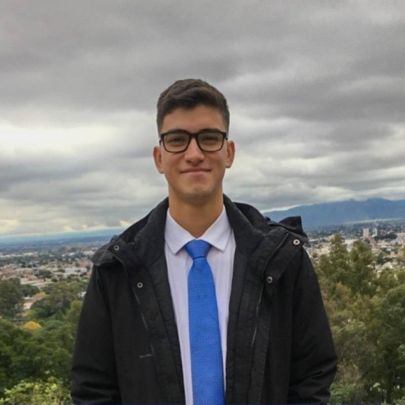

Pablo Elias Verón Rojas | WDD 130

Hello, my name is Pablo Verón, and I live in Santiago, Chile. I am learning web development because I want to build my own websites and turn my ideas into real projects. In my free time, I love cooking, and I enjoy spending time with my family, who are the most important part of my life. My main goal is to start a small bakery business with my wife. We also want to sell Argentine products in Chile, so people here can enjoy flavors that remind many of us of home. To make this dream possible, I am studying how to create web pages, and I want to build an online store where customers can discover and order our products. On this page, you will find my first steps as a web developer and a little bit about the city where I live. I hope you enjoy it!